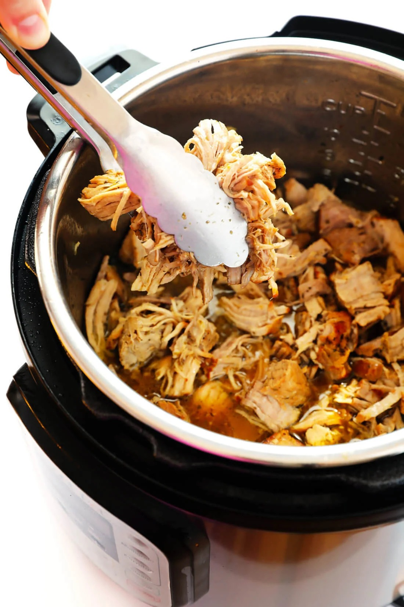

Crispy Carnitas

Description
Instant Pot Carnitas is a simple and easy way to make a delicious meal in less than 3 hours.
Seasonings. Searing. Patience. That's all it takes to make this course.
Ingredients
- 1 (4-5 lb) pork cut, trimmed to 2-inch chunks
- Fine sea-salt
- Black pepper
- 1 tbsp olive-oil
- 1 cup chicken broth
- 1 tsp chili powder
Steps
- Pour oil into pressure cooker and set to saute.
- Mix dry ingredients into a medium sized mixing bowl.
- Cut pork into sizable chunks and mix in with seasonings.
- Sear meat for 4 minutes per side.
- Press "Cancel" to turn off heat.
- Pour in chicken broth.
- Close pressure cooker lid and set vent to "sealing".
- Cook on high pressure for 1hr, followed by 15 minutes of cooldown.
- (Optional) To get the meat extra crispy, strain the juice from the meat into a measuring cup.
- Place cooked pork on an oven tray evenly and pour 1/3 of the juice on top of the meat.
- Turn on your oven broiler to "High" heat.
- Place tray in the oven for 10 minutes.
- Remove tray from oven and stir the meat around. Soft meats facing up.
- Repeat until satisfied with crispiness.
- Serve with cilantro, lime and tortillas.
- Enjoy! And don't forget your cerveza.